| 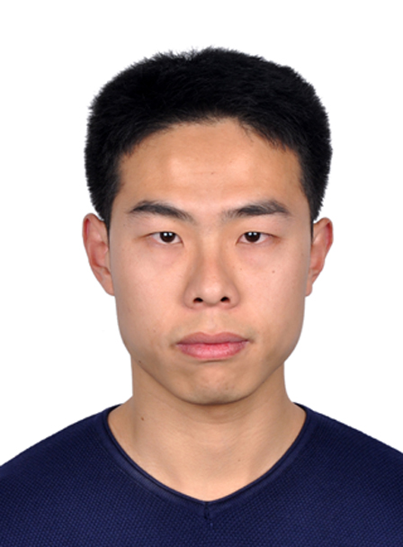 |
Weize QUAN （全卫泽）
|
Biography
I am currently an Assistant Professor at National Laboratory of Pattern Recognition, Institute of Automation Chinese Academy of Sciences. I earned my PhD in 2020 from NLPR, CASIA, advised by Prof. Xiaopeng Zhang and Prof. Dong-Ming Yan; and from GIPSA-Lab, UGA, France, advised by Prof. Denis Pellerin and Dr. Kai Wang. Before that, I received my Bachelor's degree from Wuhan University of Technology in 2014.
My research interest includes computer graphics, image processing, and deep learning.
Publications
|
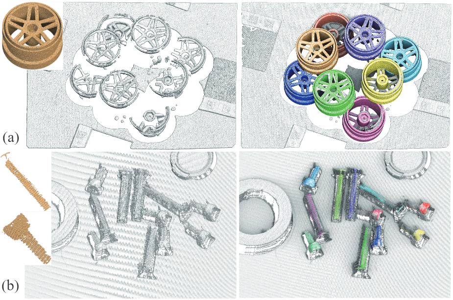
|
Efficient Center Voting for Object Detection and 6D Pose Estimation in 3D Point Cloud
Jianwei Guo, Xuejun Xing, Weize Quan, Dong-Ming Yan, Qingyi Gu, Yang Liu, Xiaopeng Zhang IEEE Transactions on Image Processing, accept, 2021. [PDF] |
|
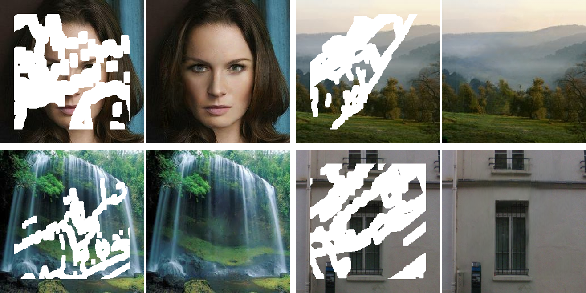
|
Pixel-wise Dense Detector for Image Inpainting
Ruisong Zhang, Weize Quan, Baoyuan Wu, Zhifeng Li, Dong-Ming Yan Computer Graphic Forum, (Proc. of Pacific Graphics), 2020 [Project Page] [PDF] [Code] |
|
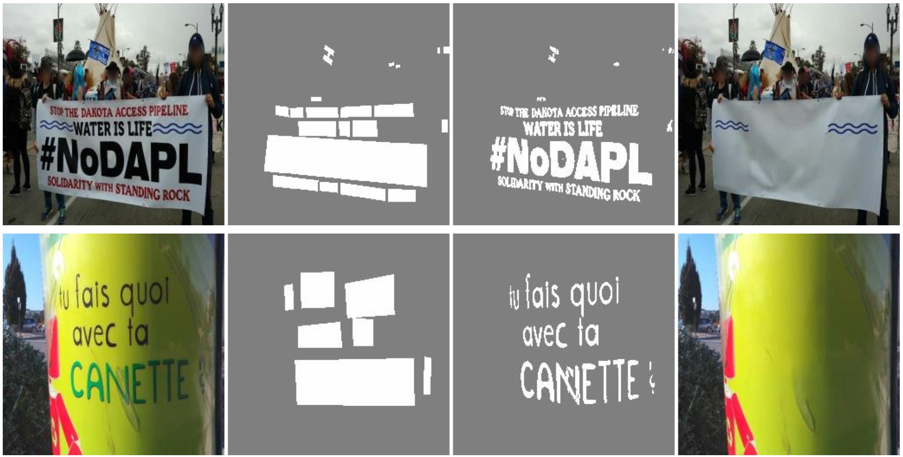
|
Scene Text Removal via Cascaded Text Stroke Detection and Erasing
Xuewei Bian, Chaoqun Wang, Weize Quan*, Juntao Ye, Xiaopeng Zhang, Dong-Ming Yan CoRR abs/2011.09768, 2020 [PDF] |
|
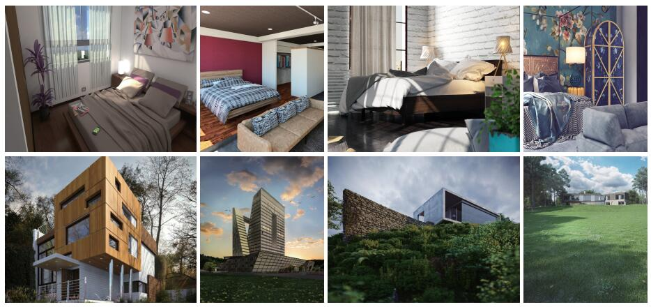
|
Learn with Diversity and from Harder Samples: Improving the Generalization of CNN-Based Detection of Computer-Generated Images
Weize Quan, Kai Wang, Dong-Ming Yan, Xiaopeng Zhang, Denis Pellerin Forensic Science International: Digital Investigation, 35:301023, 2020 [PDF] [Code&Dataset] |
|
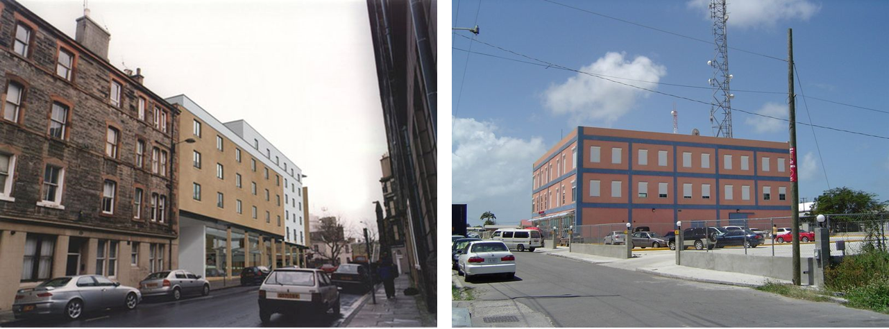
|
Distinguishing Computer-Generated Images from Natural Images Using Channel and Pixel Correlation
Ruisong Zhang, Weize Quan, Lubin Fan, Liming Hu, Dong-Ming Yan Journal of Computer Science and Technology, 2020 [Project Page] [PDF] [Code] [Slides] |
|
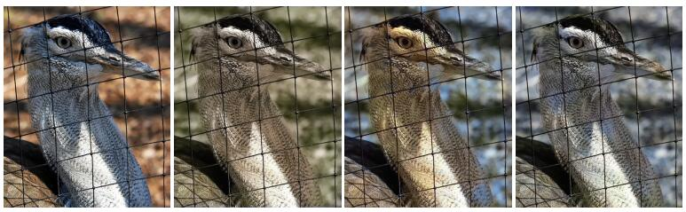
|
Improving the Generalization of Colorized Image Detection with Enhanced Training of CNN
Weize Quan, Kai Wang, Dong-Ming Yan, Denis Pellerin, Xiaopeng Zhang International Symposium on Image and Signal Processing and Analysis, 246-252, 2019 [PDF] [Code] |
|
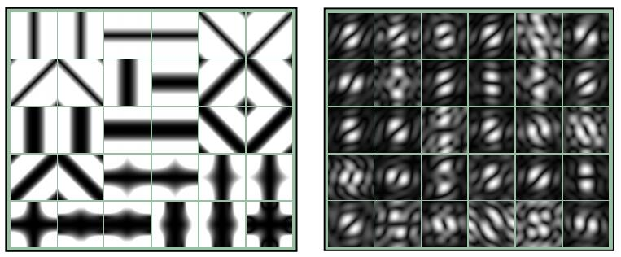
|
Impact of Data Preparation and CNN’s First Layer on Performance of Image Forensics: A Case Study of Detecting Colorized Images
Weize Quan, Kai Wang, Dong-Ming Yan, Denis Pellerin, Xiaopeng Zhang International Workshop on Machine Learning Algorithms for Cybersecurity, 127–131, 2019 [PDF] |

|
Distinguishing between Natural and Computer-Generated Images Using Convolutional Neural Networks
Weize Quan#, Kai Wang#, Dong-Ming Yan, Xiaopeng Zhang IEEE Transactions on Information Forensics & Security, 2018 [Project page] [PDF] [Code] |
|
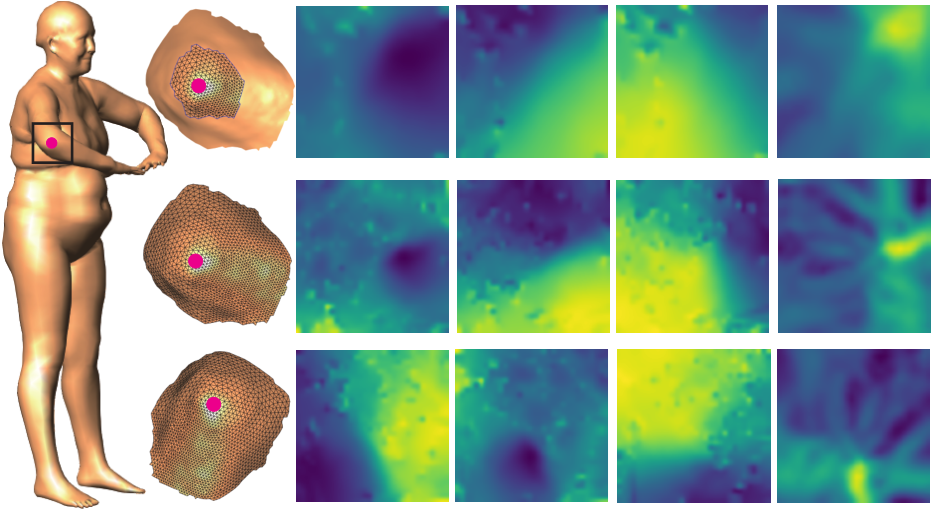
|
Learning 3D Keypoint Descriptors for Non-Rigid Shape Matching
Hanyu Wang, Jianwei Guo, Dong-Ming Yan, Weize Quan, Xiaopeng Zhang European Conference on Computer Vision, pp.3-19, 2018. [PDF] [Code] |
|
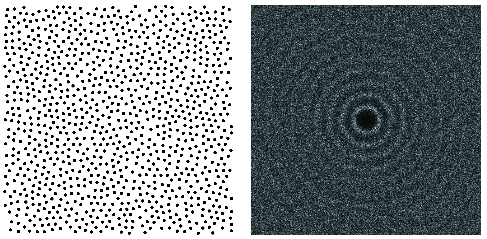
|
Maximal Poisson-disk Sampling via Sampling Radius Optimization
Weize Quan, Dong-Ming Yan, Jianwei Guo, Weiliang Meng, Xiaopeng Zhang SIGGRAPH ASIA 2016 Posters [PDF] [Code] |
|
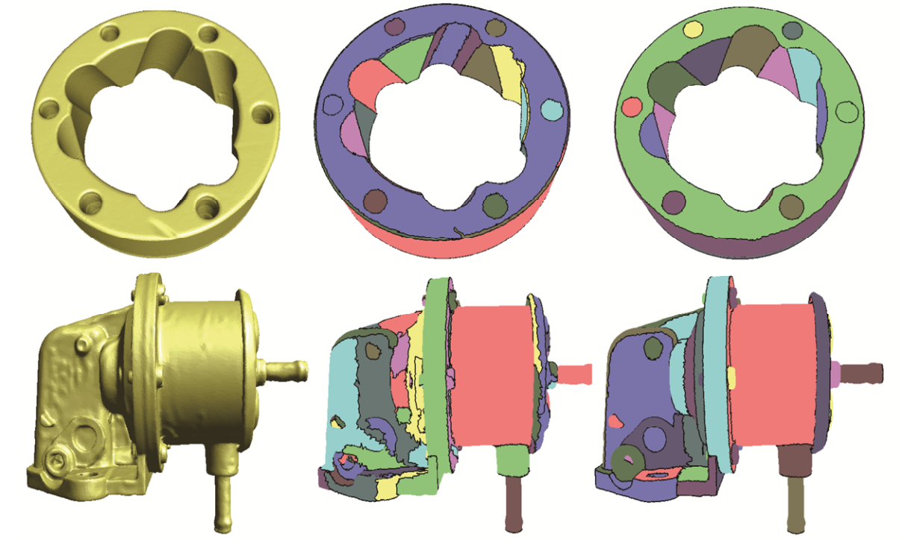
|
Improved Quadric Surfaces Recognition from Scanned Mechanical Models
Weize Quan, Jianwei Guo, Xiaopeng Zhang, Dong-Ming Yan Computer Aided Drafting, Design and Manufacturing, 26(4), 2016 [PDF] |
|
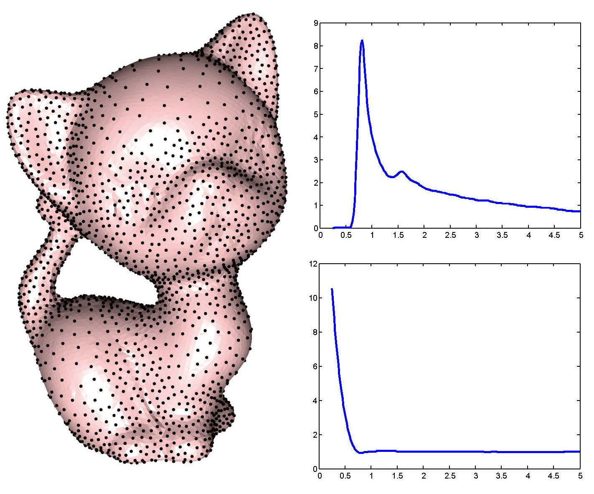
|
Analyzing Surface Sampling Patterns Using the Localized Pair Correlation Function
Weize Quan, Jianwei Guo, Dong-Ming Yan, Weiliang Meng, Xiaopeng Zhang Computational Visual Media, 2(3): 219-230, 2016 [PDF] |
Research Experiences
| Mar. 2017 - Sep. 2017 Visiting Ph.D. student, Université Grenoble Alpes, CNRS, Grenoble INP, GIPSA-lab, Directed by Dr. Kai Wang |
| Sep. 2016 - Jan. 2017 Intern student, Huawei Technologies Co., Ltd. Shenzhen |